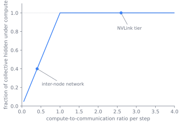
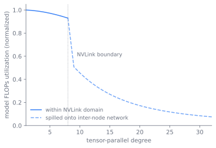

加速器与网络
训练跑得快不快，靠的是带宽，而不是峰值 FLOPs。整个硬件是一套层级制的三层带宽，每层各有各的承载量。这一章就讲这个结构：它怎么分层、为什么张量并行几乎不能跨出 NVLink 边界、又用什么数字衡量硬件真的被用上了。
一次规格表无法解释的运行
想象一次大规模训练，铺到数千张芯片跑好几周。规格表写的峰值吞吐，实际交付的要少得多。瓶颈很少是矩阵乘法单元闲着。其实是这些单元在等字节到来。等的是什么？一块芯片和自己的显存有多快的通道，机箱内两块芯片之间有多快，大厅另一头两个机箱之间有多快。每往外走一层，速度都下降不止一个数量级。一个并行轴的通信量一旦超出它所在层能托的，整个集合通信就卡住了。
规格表的峰值 FLOPs 其实不是起点。真的决定因素在下面，三层的带宽级联。每一个布局选择都在问：这次通信能从哪一层买得起。本章讲硬件底座：加速器族、互连分层、还有一个数字 MFU，它说的是硬件真的被用上了没。骑在这个底座上跑的并行算法，第 8 章 会展开；集群编排、检查点、数据链路，留给 第 31 章。
三层带宽
机器本质上就是一套三层的带宽。沿着一个字节从芯片往外，能看出每一层为什么要有、各自干什么。
最内层是芯片和它的显存。加速器把巨大的矩阵乘法吞吐配上贴在芯片边的高带宽显存（HBM）。前向和反向都靠 HBM 喂。决定内核快不快的，往往不是 FLOPs 天花板，而是 HBM 的带宽。
拖滑块看，每字节的计算越少，内核就越卡在带宽上，永远达不到规格表的峰值。
次一层是节点内：一个机箱里的几块加速器。在 NVIDIA 硬件上，它们通过 NVLink（专用芯片间底座）和 NVSwitch 连起来。NVSwitch 让节点内的每块加速器都能以完整的 NVLink 带宽互相通话，不用走慢的 PCIe。这一层承载的是通信最密集的那些并行轴。NVLink 足够快，能把集合通信全部隐在计算之下。能否隐住，看计算和通信的比例，图 30.1 画的就是这个。这一步计算大于通信，集合通信就消失了；但节点间网络那边不行，字节贵，通信就会暴露出来。

最外层是节点间：数据中心网络里的机箱间通信。用 InfiniBand 或 RoCE（RDMA over Converged Ethernet），拓扑是胖树或 rail-optimized，每块加速器配一张网卡，控制每设备的注入速率。这一层每字节比 NVLink 慢一个数量级。只有通信开销很小的那些轴，才敢跨到这一层。
flowchart TD
subgraph chip["芯片 + HBM"]
A["加速器裸片"] -->|HBM 带宽| M["高带宽显存"]
end
subgraph node["节点内（一个机箱）"]
G1["GPU"] ---|NVLink / NVSwitch| G2["GPU"]
end
subgraph cluster["节点间（跨大厅）"]
N1["节点"] ---|InfiniBand / RoCE| N2["节点"]
end
chip --> node --> cluster把并行映射到层级上
三层一搭，每个并行轴往哪放就出来了。不是喜好，而是通信量决定的。张量并行（TP）把一个矩阵乘法切到各设备，每层两次 all-reduce，最吃带宽，只能死死守在节点内的 NVLink (Shoeybi et al. 2019)。数据并行和流水线并行轻得多，DP 每步一次梯度归约，PP 每个阶段边界一次激活交接，它们可以跨节点 (Narayanan et al. 2021)。MoE 的专家并行有自己的 all-to-all，第 7 章 会进一步谈。那条「TP 在节点内、DP/PP 跨节点」的法则，不是约定俗成，而是带宽鸿沟逼出来的，如 图 30.3 所示。
TPU 的岔路：环面而非交换机
TPU pod 是 JAX/XLA 的方案，成本模型完全不同。这说明刚才的三层不是定律，只是设计选择。TPU 芯片通过芯片间互连（ICI）和光路交换（OCS）拼成环面，不是交换式胖树。邻域间带宽很充裕，切分从一开始就考虑环面形状，用 GSPMD 风格的注解，不是事后往树上套 (Xu et al. 2021)。同样一个字节，GPU 集群要过交换机，TPU pod 直接走到物理邻居。这就是那边带宽能随局部性扩展的原因。
MFU：那个唯一诚实的数字
衡量这套系统有没有用的唯一数字是模型 FLOPs 利用率，MFU。定义很简单：模型实际需要的 FLOPs，除以同样时间硬件能打出的峰值：
它只算模型真正要的算术。它的兄弟 HFU（硬件 FLOPs 利用率）还把硬件确实跑了、但模型不一定需要的工作算进去。比如激活重算里多出来的前向传播。这就是为什么开了重算后 HFU 高于 MFU。MFU 才是诚实的数字。因为它回答成本要知道的：花出去的每一份算术，有多少真的推动了模型。
这些层级为何长成这样
这些层级是怎么长出来的。带宽鸿沟扩得比任何单层底座能填上的速度都快。早期多 GPU 用 PCIe，但切矩阵乘法时已经太慢，所以 NVLink、后来 NVSwitch 就加进来，目的是让节点内足够快来承载张量并行 (Shoeybi et al. 2019)。加速器这边也在演进，每一代都给矩阵单元加新格式支持。Hopper 级新加了 fp8，同样的硅每字节能跑出更多吞吐 (Micikevicius et al. 2022)（内核层表现，第 19 章 会进一步讲）。网络那边，InfiniBand 和 RoCE 都走向了 RDMA 和 rail-optimized 拓扑。每块加速器有到别的节点的专用路，节点间这层就能长大，不用所有流竞争交换口。TPU pod 另辟蹊径，用环面替代交换，让带宽随局部性扩展。
每个轴各自的代价
每个并行轴买一种资源，付的代价不一样。互连分层决定汇率。
- 张量并行付带宽。 TP 削减每设备的显存和延迟，但每层两次 all-reduce，吃节点内带宽。这代价只能在 NVLink 上付，所以 TP 度数被 NVLink 域限住。过了节点边界，all-reduce 掉到节点间网络，那边藏不住，直接表现为 MFU 下降。图 30.4 就是这道崖的图：TP 在 NVLink 域内时 MFU 平稳，一溢出就掉。

改一下 nvlink_size 和 slowdown，看平台在哪儿断、悬崖多陡。
import numpy as np
import matplotlib.pyplot as plt
nvlink_size = 8 # accelerators reachable at NVLink bandwidth
peak = 0.55 # MFU plateau when communication hides under compute
slowdown = 10.0 # inter-node bytes are this many times dearer than NVLink
tp = np.arange(1, 33)
# fraction of the step lost to exposed (un-hidden) all-reduce once TP spills
comm = np.where(tp <= nvlink_size, 0.0, (tp - nvlink_size) / tp * (1 - 1 / slowdown))
mfu = peak * (1 - comm)
plt.plot(tp, mfu, marker='o')
plt.axvline(nvlink_size, ls='--', color='gray', label='NVLink boundary')
plt.xlabel('tensor-parallel degree'); plt.ylabel('MFU')
plt.ylim(0, 0.6); plt.legend(); plt.title('TP past the node falls off a cliff')
print('MFU at TP=8:', round(mfu[7], 3), ' at TP=16:', round(mfu[15], 3))
plt.show()
读时间线
跨层级搬字节的集合通信，NVIDIA 用 NCCL（AMD 用 RCCL），根据各 rank 位置选环还是树，决定走 NVLink 还是网络 (NVIDIA 2024)。从业者很少直接调，是并行框架去做。从业者看的是每步时间线。MFU 要从时间线诊断，不是从损失曲线。没藏住的通信、太大的流水线气泡、过多重算、没融合的内核，都在峰值和实际 MFU 的差距里占份额。时间线就是看这些东西的地方。
图 30.5 把时间线读作从峰值 FLOPs 往下掉到 MFU 的过程。空闲就是设备在等通信或卡在气泡里，纯损失。硬件实际跑的 FLOPs 里，重算占一块，是模型不需要的工作。这部分把 HFU 推到 MFU 上面，但诚实的数字只算有用的那份。
延伸阅读
- Shoeybi et al., "Megatron-LM: Training Multi-Billion Parameter Language Models Using Model Parallelism," 2019. arXiv:1909.08053
- Narayanan et al., "Efficient Large-Scale Language Model Training on GPU Clusters Using Megatron-LM," 2021 (SC'21; PTD-P 3D parallelism). arXiv:2104.04473
- Micikevicius et al., "FP8 Formats for Deep Learning," 2022. arXiv:2209.05433
- NCCL (NVIDIA Collective Communications Library): optimized inter-GPU collective primitives (all-reduce, all-gather, reduce-scatter, all-to-all) over NVLink/PCIe/InfiniBand. Engineering library, not a single canonical paper. NVIDIA/nccl
- Xu et al., "GSPMD: General and Scalable Parallelization for ML Computation Graphs," 2021 (XLA/TPU sharding annotations underlying JAX
pjit). arXiv:2105.04663